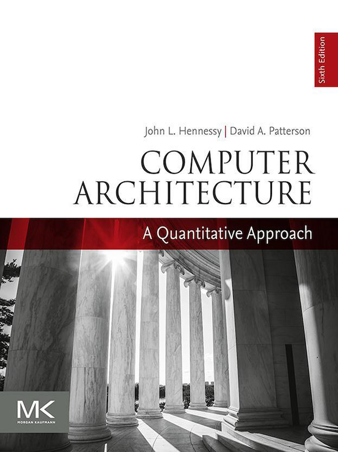

例子
int x = 0, y = 0;
void T1() {
x = 1; int t = y; // Store(x); Load(y)
__sync_synchronize();
printf("%d", t);
}
void T2() {
y = 1; int t = x; // Store(y); Load(x)
__sync_synchronize();
printf("%d", t);
}
遍历模型告诉我们：01, 10, 11
机器永远是对的 - Model checker 的结果和实际的结果不同 → 假设错了
🌶️ 现代处理器也是 (动态) 编译器！

错误 (简化) 的假设
- 一个 CPU 执行一条指令到达下一状态
实际的实现
- 电路将连续的指令 “编译” 成更小的 $\mu$ops
- RF[9] = load(RF[7] + 400)
- store(RF[12], RF[13])
- RF[3] = RF[4] + RF[5]
在任何时刻，处理器都维护一个 $\mu$op 的 “池子”
- 与编译器一样，做 “顺序执行” 假设：
没有其他处理器 “干扰” - 每一周期执行尽可能多的 $\mu$op - 多路发射、乱序执行、按序提交
放弃 (3)：多处理器间内存访问的即时可见性
满足单处理器 eventual memory consistency 的执行，在多处理器系统上可能无法序列化！
当 $x \ne y$ 时，对 $x$, $y$ 的内存读写可以交换顺序
- 它们甚至可以在同一个周期里完成 (只要 load/store unit 支持)
- 如果写 $x$ 发生 cache miss，可以让读 $y$ 先执行
- 满足 “尽可能执行 $\mu$op” 的原则，最大化处理器性能
# <-----------+
movl $1, (x) # |
movl (y), %eax # --+
- 在多处理器上的表现
- 两个处理器分别看到 $y=0$ 和 $x=0$
宽松内存模型 (Relaxed/Weak Memory Model)
宽松内存模型的目的是使单处理器的执行更高效。
x86 已经是市面上能买到的 “最强” 的内存模型了 😂
- 这也是 Intel 自己给自己加的包袱
- 看看 ARM/RISC-V 吧，根本就是个分布式系统
{kind=link}